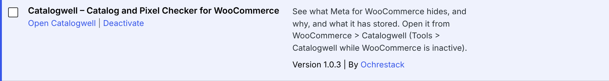
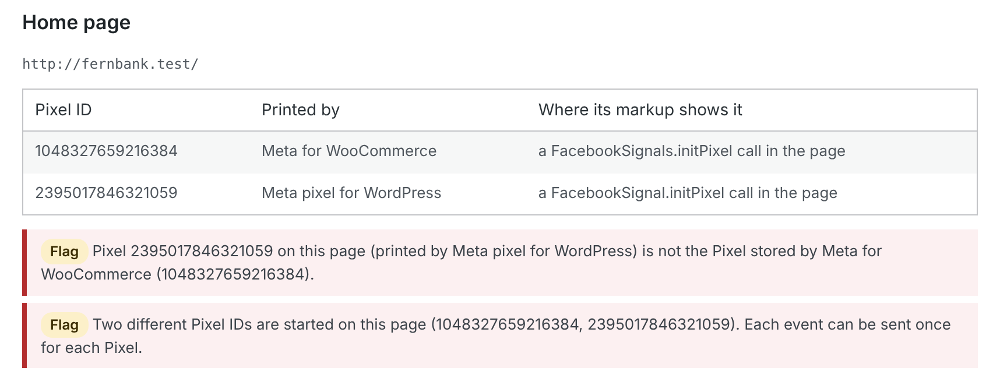
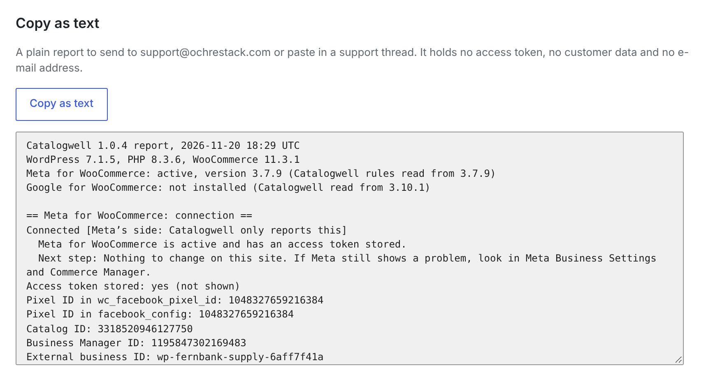

Catalogwell quick start
Install Catalogwell, run your first check and read the result. Catalogwell Pro is at the end. Back to the Catalogwell product page.
Install
Needs WordPress 6.5 or later and PHP 7.4 or later. WooCommerce is not needed to activate Catalogwell; its checks are about Meta for WooCommerce and Google for WooCommerce.
The free plugin
- Download catalogwell.zip (version 1.0.1) from this site. Do not unzip it. The plugin is not in the WordPress.org directory yet.
- In WordPress, go to Plugins > Add Plugin (WordPress 6.5 calls it Add New Plugin), click Upload Plugin, choose
catalogwell.zip, then Install Now and Activate Plugin. - WordPress says “Plugin activated.” Catalogwell adds no wizard and no redirect. Find it in two places: the Open Catalogwell link on its row of the Plugins screen, and WooCommerce > Catalogwell (Tools > Catalogwell while WooCommerce is inactive).

Catalogwell Pro (after the free plugin)
- Download
catalogwell-pro-from Polar, through the link in the order e-mail, and unzip it once. It holdsdownload.zip catalogwell.zip,catalogwell-pro.zipandINSTALL.txt. Upload the two zips inside it, not the download itself, and do not unzip them. - Install and activate
catalogwell.zipfirst, as above. Then do the same withcatalogwell-pro.zip. Pro adds WooCommerce > Catalogwell Pro. - If you upload Pro first, WordPress ends on a page reading “Error: Catalogwell Pro requires 1 plugin to be installed and activated: catalogwell.” and activates nothing. The Plugins list says “You cannot activate this plugin as it has unmet requirements”. Install and activate
catalogwell.zip, then press Activate on the Pro row.
A new Pro version is a new file on your Polar download page, with no new purchase. Upload it the same way and press Replace current with uploaded.
Your first check
- Go to WooCommerce > Catalogwell. The field is optional: it takes a product page of your own site, and left empty Catalogwell picks the newest published product shown in the shop.
- Press Run the checks and keep the screen open until the line next to the button says “Finished.”
- Read the four sections under the button. Copy as text, at the end, makes a plain report for the plugin’s support forum: versions, states and IDs, with no token, customer data or e-mail address.

Reading the result
Connection. Whether Meta for WooCommerce and Google for WooCommerce are active, deactivated or deleted, whether a token is stored (never shown) and the IDs. Meta for WooCommerce gets one of five states: Connected (a token is stored; Catalogwell does not log in to Meta), Token rejected by Meta (the plugin itself marked it invalid), Access token missing, Left behind (the plugin is off but its token or IDs are still stored) and Never connected. Each has one next step and a label: “Fix on this site”, or “Meta’s side: Catalogwell only reports this”.
Catalog. How many products go to Meta as hidden, a table of reasons, and a list you can filter. Reasons name the WooCommerce setting or product field they come from.
Pixel. The Pixel IDs your home page and a product page carry, and which plugin printed each. Flags: no Pixel while one is stored, a Pixel that is not the stored one, two Pixel IDs, or one Pixel started twice.

Event IDs and Purchase pairs. The same page loaded five times, each as a new visitor. An event ID seen in two loads is reported as Repeated. In a cached copy more than 30 minutes old, Meta for WooCommerce 3.7.9 drops the ID in the browser, and Catalogwell says No event ID sent. For your last 50 orders it counts the Purchase records the store saved: what your store recorded, never what Meta received.

Catalogwell Pro
- Go to WooCommerce > Catalogwell Pro, or use the Open Catalogwell Pro link on its Plugins row. Check now runs the checks at once and adds them to the history.
- Once a day Pro runs checks 1 to 4 again and e-mails the admin address only when something changed. “Once a day” is WordPress’s own scheduler, which runs when your site gets a visit: a site with very little traffic runs it late.
- The last 30 checks are listed with what changed. Download the product list (CSV) gives each product with its visibility, the reason and what the feed file says.
Limits
- Catalogwell reads what your site stores and serves. It does not see your Meta or Google accounts and does not change them.
- The rules are read from Meta for WooCommerce 3.7.9 and Google for WooCommerce 3.10.1; another version is named on screen with a note that a rule may differ.
- A CDN in front of your site may cache differently from what your site returns. A Pixel started by a script file or a tag manager is not in the page markup and is not listed.
Privacy
Neither plugin sends anything to Ochrestack or any outside service; there is no telemetry and no update call. Catalogwell loads only your own site’s pages, as a visitor who is not logged in. Meta for WooCommerce is told to send no event for those loads (checked on 3.7.9).
Support
Email support@ochrestack.com with your WordPress and PHP versions, your Meta for WooCommerce version and the text from Copy as text.